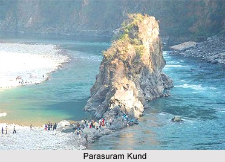

Parashuram kund

Parshuram Kund is a Hindu pilgrimage centre situated on the Brahmaputra plateau in the lower reaches of the Lohit River and 21 km north of Tezu in Lohit district of Arunachal Pradesh. Dedicated to sage Parshuram, the popular site attracts pilgrims from Nepal, from across India, and from nearby states of Manipur and Assam. Over 70,000 devotees and sadhus take a holy dip in its water each year on the occasion of Makar Sankranti, in the month of January.[1][2][3]

HOW TO REACH ?
Nearest Airport: Etanagar
Nearest Railway Station:Lohit
Nearest Bus Stand:Lohit